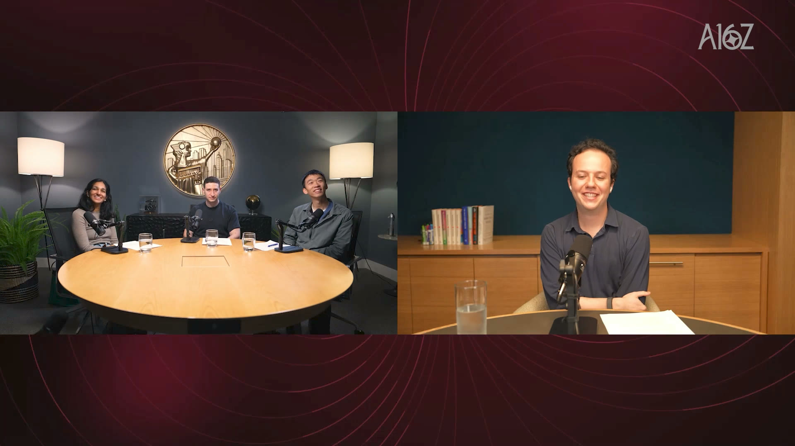
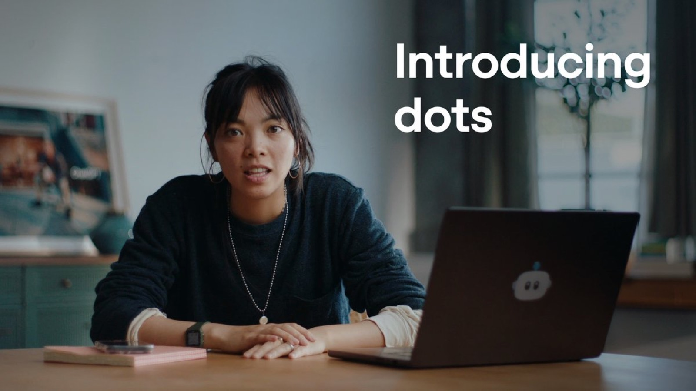
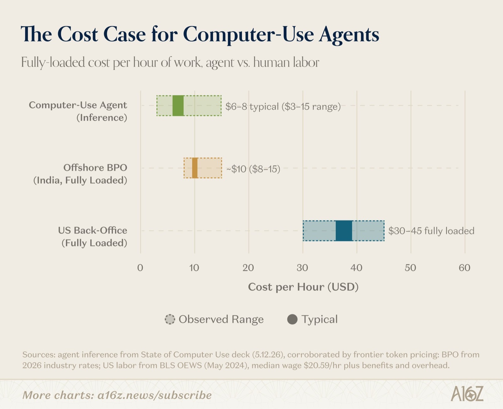
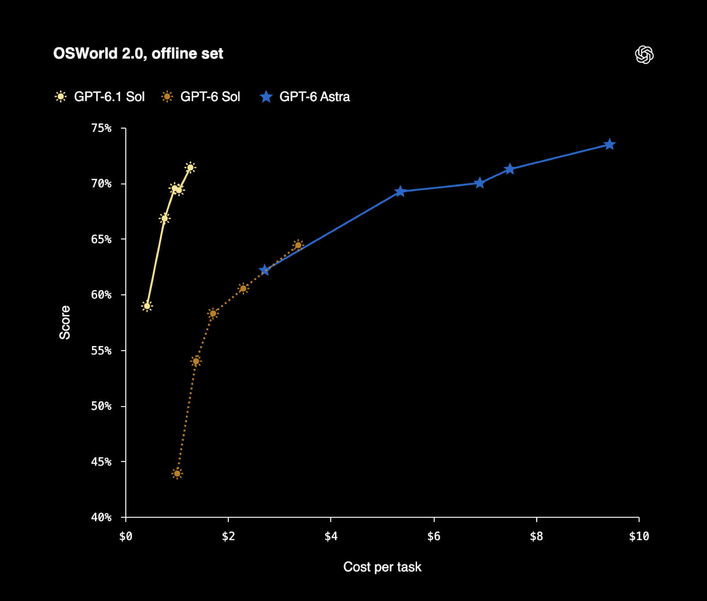
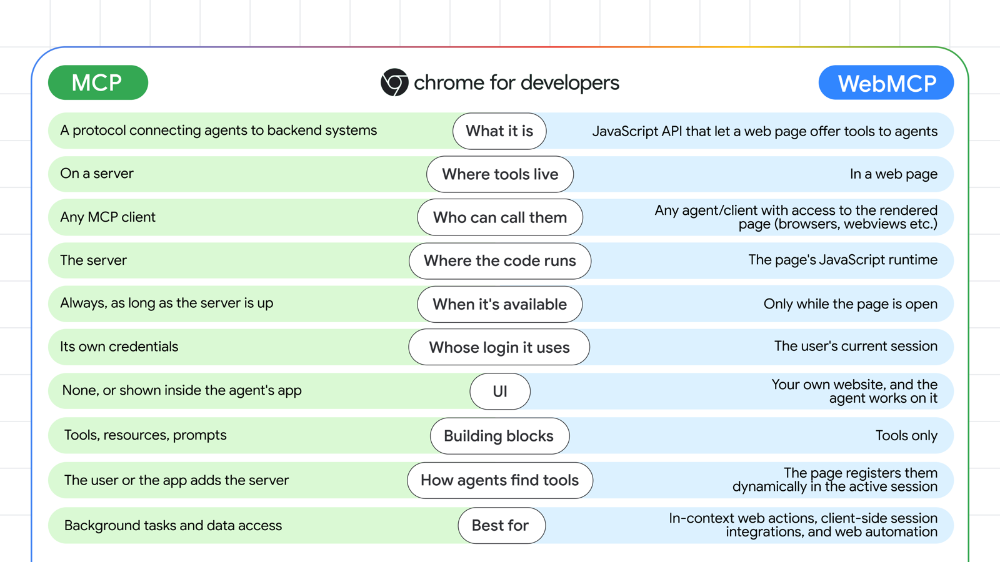
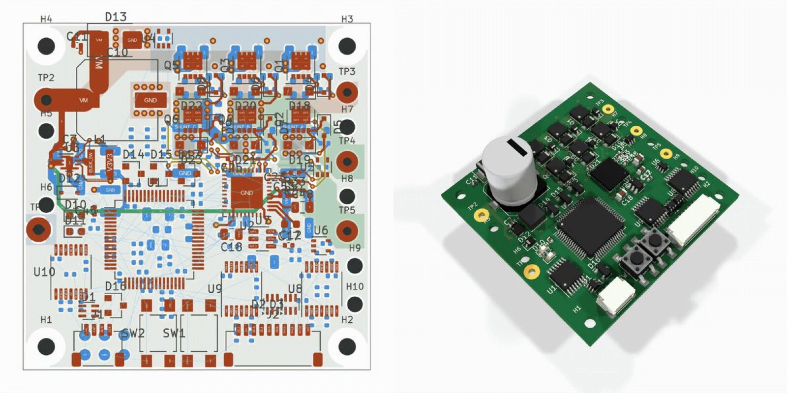
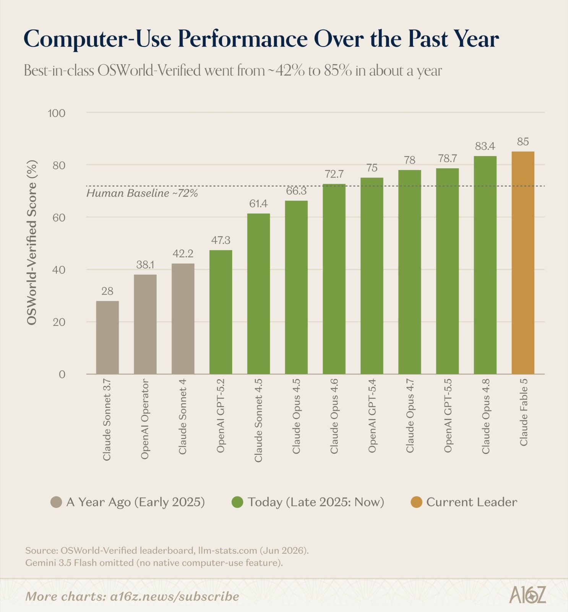

更快同一任务，思考 token 更少
更会创意边听你说，边在 Paint 里画
更可靠Ari 的比方：97% 和 99% 差别难察觉，但很重要
更对齐更抗 prompt injection，更少意外操作
前三项是 Ari 的个人体感；97% 和 99% 是他举的例子，不是实测数字。第四项 James 引自 system card。
像人一样用电脑，然后比人快
阅读约 18 分钟
Ari 在 OpenAI 做消费端的 computer use 产品，James 做企业端，两人此前都创过业。1Ari 联合创办过 Workflow（后成了 Apple 的“快捷指令”）和 Mac AI 助手 Sky 的公司，后者 2025-10 被 OpenAI 收购。2Seema、Fabrizio 是 a16z 合伙人，Fabrizio 远程连线。34computer use = 让模型看屏幕、动鼠标、打字，像人一样操作软件。开头约 50 秒预告略去。

computer use 让 agent 能用任何有界面的软件。OpenAI 正把它做得比专家更快、更便宜、可管控，它正进入规模化阶段。
AI 能像人一样用电脑之后，它够快、够可靠、够可控了吗？会先改变哪些工作和软件？
斜纹 = 开头约 50 秒预告剪辑，本页略去
Astra 的进步在边角上：更快、更可靠、更对齐。消费端探新用法，企业端补课；dots 主动替人做事。
快过专家后，能交的事都会交给 agent；人盯不过来，就要可调的审批；开放网络还有广告难题。
不用谁先适配，任何软件都能用；企业靠确定性管控建立信任；眼下的用例很“无聊”。
界面不会消失，会更个性化；创业公司的机会在深懂行业的复杂流程。
把分散的浏览器和电脑统一成一套体验；云端电脑把它带给只用手机的人。
What Astra changed for computer use
进步在边角上
Astra 之前，Sol 已经很会用电脑。Astra 的进步在边角上：更快、更可靠、更对齐。Ari 说他“更信任它一点”，James 说企业用起来会“安全得多”。
前三项是 Ari 的个人体感；97% 和 99% 是他举的例子，不是实测数字。第四项 James 引自 system card。
Consumer vs. enterprise computer use
消费端探路，企业端补课
James：企业端的用例相当明显，模型能力可能早到了一阵，企业在追赶，关键是安全。消费端负责推前沿，找今天的软件做不到的新用法。
能力先到一步，企业在追赶
难点：安全、管控
例子：用了 15–20 年的老软件，没有 MCP
推前沿，找新用法
关键：速度
例子：dots 买东西、约理发
How James runs his workday with dots
主动找事做的 agent
James：dots 的价值在“主动”。它自己发现漏掉的事，也接得住每次形状都不一样的长期任务，并在云端和本地两台电脑之间做完。
Sentry = 程序报错监控服务；用户报 bug 时常附上 Sentry 日志。

OpenAI 2026-09-29 发布 dots：GPT‑6 Astra 驱动的常驻（always-on）agent。14每个 dot 住在云端，有自己的电脑和浏览器；面向 Pro、Business Premium 和 Enterprise 用户。15这是两天后放出的演示视频。
原帖 ↗When computer use becomes superhuman
比专家快的那一天
Ari：要盯着看或等结果时，速度决定用 agent 是否比自己动手划算。它已经比普通人快，正接近比专家快；到那时，手动能做的事默认都会交给 agent。
到那时，除非你想自己做，手动能做的事都交给 agent。

a16z 把 Ari 这句话配上 8 月文章的成本图。每小时后台工作：computer-use agent 典型 6–8 美元（只算推理费用，2026-05 的数据），印度外包约 10 美元，美国人工 30–45 美元（人工两项含福利和管理费用）。
原帖 ↗
“便宜的模型也在快速变好”的例子。OSWorld 2.0 离线集上，GPT‑6.1 Sol 最高约 71%，每任务约 1.3 美元；Astra 最高约 73%，约 9 美元（图中读数）。
原帖 ↗How much autonomy to give agents
盯不过来之后，怎么管
James：agent 快到人盯不过来时，要能调“人在环中”的多少，还要能事后审计。他说随 Astra 推出了一套企业管控，还提到一个审核 agent 动作的模型 Guardian。
agent 越快，越需要这个旋钮和事后审计。
What agents mean for ad-supported sites
agent 看广告，不算钱
James：公司批准并在用的软件，自动化简单直接；难题在开放网络。靠广告的网站收不到 agent 带来的“曝光”收入；愿意拥抱 agent 的网站，在采用 WebMCP 这类标准。
James：用 WebMCP 时，你面对的仍是网站本身，而不是一个 API。

MCP 把 agent 接到你的后端服务；WebMCP 让打开着的网页自己向 agent 提供工具，用的是用户当前的登录状态，界面仍是你的网站。
原帖 ↗Computer use as the universal API
先问“能不能交给 agent”
computer use 不需要谁先做适配，它像人一样操作任何应用。James 称它是模型“为了把事做成”的通用 API：任务越复杂，越可能用到它。
| 方式 | 谁要先做事 | 能用的软件 |
|---|---|---|
| API | 软件方开放接口 | 有 API 的 |
| MCP | 有人写好 MCP server | 有 server 的 |
| computer use | 不用 | 任何有界面的 |
Getting enterprises to trust agents
确定性护栏，看得见的光标
James：让企业放心靠两层：管理员能设的确定性管控，和摆出来的对齐评测。Ari：产品设计也在建立信任。
James：这些都是旋钮，由企业自己调。
Why the best use cases are the boring ones
Boring is opportunity
James 把企业用例分两类：一类是“无聊”的繁琐流程，比如在 ERP、CRM 这些记录系统里采购、对账；另一类是电路、建筑、游戏设计这类更有野心的工作，企业现在想得少，会是下一步。
| 类别 | 例子 |
|---|---|
| 企业的繁琐流程（James） | 采购；月底多本账对账，很多财务软件没有 API；找潜在客户、录入外联软件；市场调研 |
| 更有野心的工作（James） | 视觉设计、电路设计、建筑、硬件工程、游戏设计；企业现在想得少 |
| 消费端的杂事（Ari） | 填 DMV 表、退订邮件 |
| 以前没空做的事（Ari） | 他用小众的 Apple Numbers 维护财务和备餐表格；当私教的朋友给每个客户做定制内容 |
| Ari 最期待的 | 用语音和整台电脑交互；软件的形态会因此改变 |
James：这一整条，computer use 都能自动做。

Astra 发布帖里的演示：一块电路板的布线图和 3D 渲染。James 说，电路设计这类工作是下一批用例。
原帖 ↗Why UI isn't going away
软件便宜了，就得更好
老软件会长期存在，computer use 正好能操作它们。做软件变便宜，会逼软件更好用、更个性化；人又偏爱亲手操作，所以界面不会消失。
Ari 期待的新软件：界面照旧，底下是 agent；有的 agent 再用 computer use 操作老软件。
主持人Fabrizio 分出两个桶，两边都还需要界面：
看重乐趣和学习，人要自己用
agent 执行；人设目标、看审计日志：“这笔款为什么付了？”
Advice for founders building on agents
深懂一个行业的复杂流程
实验室做不完所有事。James：创业公司的机会在深懂某个行业的复杂流程，用 computer use 串起分散的软件，再包装成客户用着舒服的产品。
James：在旧金山，人们会想“为什么不直接装 Codex 让它做？”但普通企业要过四道坎：
Making computer use feel coherent
四个浏览器，互不相通
下一步是更快、更会实时协作、更主动；还要把散在各处的浏览器和电脑，统一成普通人能理解的一套体验。
虚线框 = 彼此不通：在一处登录，别处用不上。OpenAI 文档也写明：内置浏览器的配置和你平时的浏览器分开；ChatGPT Work 的云端电脑有自己的 cookie 和登录状态。23
| 浏览器 | 2026-07-09 | 之后 |
|---|---|---|
| Chrome 扩展 | 推出侧边聊天，把 ChatGPT 和 Codex 带进 Chrome：能看浏览器上下文、控制标签页 | 10-15 起向所有 Chrome 用户开放：Chat 只读标签页，Work 能控制2425 |
| 桌面 app 内置浏览器 | 随新桌面 app 升级：多标签页、密码管理器、passkey 和企业 SSO 登录 | 08-25 支持 WebMCP20 |
| ChatGPT Work 云端浏览器 | 推出：用网站前先征求同意，可随时接管 | 08-25 起能在云端浏览器里登录网站：你在安全表单里输入账号密码，ChatGPT 看不到26 |
| dots 的云端电脑 | — | 09-29 随 dots 推出，每个 dot 一台15 |
2026-07-09 一列出自 James 当天的帖子串。他在串尾宣布停用 Atlas，并说这些能力都建立在 Atlas 用户的经验上。27Atlas 2026-08-09 停止服务。28
Computer use's scaling moment
从桌面到每个人的手机
模型今年才变得好用，产品最近两个月快速增长。下一个拐点是云端电脑：把 computer use 带给只用手机的普通人。
Operator 研究预览 OpenAI 第一个 computer use 产品29
ChatGPT Atlas 浏览器发布 只有 macOS 版28
James 加入 OpenAI，做 Atlas 访谈里说 1 月加入，年份按上下文推断
Codex 在 Mac 后台操作应用 基于 Ari 联合创办的 Sky22
ChatGPT Work 和新桌面 app 发布；James 宣布停用 Atlas 同日推出三项浏览器更新：内置浏览器、Work 云端浏览器、Chrome 侧边聊天27
Atlas 停止服务28
GPT‑6 Astra6 James 说企业管控随它推出
ChatGPT 用 Chrome 标签页的能力向所有 Chrome 用户开放 Chat 只读，Work 能控制24
本期上线；同日发布 GPT‑6.1 Terra8
实心点 = 本期提到的产品或事件。

Seema 开场提到的 8 月文章16。OSWorld‑Verified（测 agent 操作真实桌面的基准）的最佳成绩，一年内从约 42% 升到 85%；人类测试者约 72%。数据截至 2026-06，早于 Astra。
原帖 ↗Takeaways
Ari 的收尾：我们正处在 computer use 的规模化时刻，消费端和企业端同时。
Glossary
| 术语 | 中文解释 | 出现 |
|---|---|---|
| computer use | 让模型看屏幕、动鼠标、打字，像人一样操作软件 | 全篇 |
| computer-using agent | 会用电脑的 agent | 00 |
| GPT‑5.6 / GPT‑6 各型号 | GPT‑5.6 分三档：Sol 旗舰、Terra 均衡、Luna 快而省。GPT‑6 这一代 Astra（2026-09）是旗舰；GPT‑6.1 Sol 接近 Astra、更便宜；GPT‑6.1 Terra 主打低价快速的 computer use | 00 03 |
| thinking tokens | 模型作答前“思考”用的 token，越少越快越省 | 00 |
| prompt injection | 藏在网页、文件里，想劫持 agent 的指令 | 00 07 |
| system card | 模型发布时附的安全评测报告 | 00 |
| MCP | Model Context Protocol：给 agent 接工具和数据的开放协议 | 01 06 |
| skills | 教 agent 用某个软件、做某类任务的说明包 | 01 |
| dots | OpenAI 2026-09 发布的常驻 agent，各有一台云端电脑 | 02 11 |
| human-in-the-loop | 人在环中：关键动作要人批准 | 04 07 |
| Auto-review（Guardian） | 用一个单独的审核 agent 代替人，批准或拒绝越过沙箱边界的请求；James 叫它 Guardian，说它看每一步；桌面 app 里叫 Approve for me | 04 |
| WebMCP | 让网页向 agent 提供工具的规范草案（W3C 社区组） | 05 09 |
| flexible input | James 的说法：遇到模糊处先问你，你不答就自己找上下文；没查到同名官方功能 | 06 |
| ERP / CRM / system of record | 企业资源计划 / 客户关系管理 / 记录系统（公司数据的权威来源） | 08 |
| direct manipulation | 直接操作：用手直接拖、点界面上的对象 | 09 |
| OSWorld 2.0 | OSWorld 的长流程版本（2026-06 发布，108 个任务）；没有公布人类成功率，不能和 OSWorld‑Verified 的人类约 72% 直接比 | 00 03 |
| OSWorld‑Verified | 测 agent 操作真实桌面的基准；人类约 72% | 12 |
| Atlas | OpenAI 2025-10 发布的 AI 浏览器，2026-08-09 停止服务 | 11 12 |